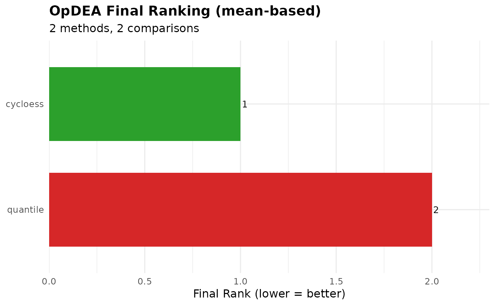

Orchestrator that imports, ranks, visualizes, and exports results from multiple normalization/imputation method combinations.
Usage
benchmarking_multiple(
opdea_combined = NULL,
confusion_combined = NULL,
classified_combined = NULL,
bench_metrics_combined = NULL,
results_dir = NULL,
pattern = "benchmark_opdea_metrics\\.tsv$",
method_names = NULL,
recursive = TRUE,
strip_prefix = "benchmark_",
metrics = .BM_METRICS,
extended_metrics = .BM_EXTENDED_METRICS,
p_col = "adj.P.Val",
plots = "all",
verbose = TRUE,
output_dir = NULL,
export_plots = TRUE,
export_tables = TRUE,
plot_width = 12,
plot_height = 8,
plot_dpi = 150
)Arguments
- opdea_combined
Optional pre-built data.frame with columns: Assay, Comparison, nMCC, G_mean, pAUC_001, pAUC_005, pAUC_010. If NULL, results are imported from
results_dir.- confusion_combined
Optional pre-built data.frame with columns: Assay, Comparison, TP, FP, TN, FN. If NULL and
results_diris provided, imported frombenchmark_confusion_overall.tsvfiles.- classified_combined
Optional pre-built data.frame with columns: Assay, Comparison, truth, and a p-value column. If NULL and
results_diris provided, imported frombenchmark_classified.tsvfiles. Used for multi-method ROC curves.- bench_metrics_combined
Optional pre-built data.frame from
import_benchmark_metrics()with columns: Assay, Comparison, Sensitivity, Specificity, Precision, NPV, F1, Accuracy, MCC, Performance. If NULL andresults_diris provided, imported frombenchmark_metrics.tsvfiles. Used for extended 11-metric ranking.- results_dir
Parent directory containing benchmark subfolders (each with
benchmark_opdea_metrics.tsv). Used only ifopdea_combinedis NULL.- pattern
Regex for opdea metrics filename (default:
"benchmark_opdea_metrics\.tsv$")- method_names
Optional Assay names for file import
- recursive
Search subdirectories? (default: TRUE)
- strip_prefix
Prefix removed from each
Assayname (default "benchmark_"), so folder-derived names inresults_dirmode match the in-memory ones (e.g. "benchmark_Rlr_none_BERT" -> "Rlr_none_BERT"). Set to NULL or "" to keep the full folder name. Harmless when the prefix is absent.- metrics
Character vector of metrics for OpDEA ranking (default: all 5 OpDEA metrics)
- extended_metrics
Character vector of metrics for extended ranking (default: all 11 classification + OpDEA metrics)
- p_col
P-value column name for ROC curves (default: "adj.P.Val")
- plots
Which plots to generate: "all" or character vector of names. Valid names: "ranking_heatmap_mean", "ranking_heatmap_median", "ranking_bars_mean", "ranking_bars_median", "metrics_heatmap_mean", "metrics_heatmap_median", "metrics_comparison", "extended_ranking_bars", "extended_ranking_heatmap"
- verbose
Print progress messages (default: TRUE)
- output_dir
Directory for exporting results (NULL = no export)
- export_plots
Export plots as PNG (default: TRUE)
- export_tables
Export tables as TSV (default: TRUE)
- plot_width
Plot width in inches (default: 12)
- plot_height
Plot height in inches (default: 8)
- plot_dpi
Plot resolution (default: 150)
Value
Named list with:
- opdea_combined
Combined input data.frame
- mean_aggregated
Mean of metrics per Assay
- median_aggregated
Median of metrics per Assay
- mean_ranking
Ranking table (mean-based)
- median_ranking
Ranking table (median-based)
- gg_ranking_heatmap_mean
Heatmap of ranks (mean)
- gg_ranking_heatmap_median
Heatmap of ranks (median)
- gg_ranking_bars_mean
Bar chart of final rank (mean)
- gg_ranking_bars_median
Bar chart of final rank (median)
- gg_metrics_heatmap_mean
Heatmap of metric values (mean)
- gg_metrics_heatmap_median
Heatmap of metric values (median)
- gg_metrics_comparison
Boxplot distributions
- ranking_by_comparison
Named list of ranking data.frames per comparison
- ranking_by_comparison_combined
data.frame with all per-comparison rankings
- gg_ranking_heatmap_by_comp
Named list of heatmaps per comparison
- gg_ranking_bars_by_comp
Named list of bar charts per comparison
- confusion_combined
Combined confusion data.frame (if available)
- gg_confusion_stacked
Faceted confusion stacked bars (if available)
- gg_confusion_stacked_by_comp
Named list of confusion plots per comparison
- classified_combined
Combined classified data.frame (if available)
- gg_roc_by_comp
Named list of ROC plots per comparison (if available)
- gg_roc_zoom_by_comp
Named list of ROC zoom plots per comparison (if available)
- extended_combined
Merged classification + OpDEA data (if bench_metrics available)
- extended_mean_aggregated
Mean-aggregated extended metrics per Assay
- extended_ranking
Extended ranking table (11 metrics, mean-based)
- gg_extended_ranking_bars
Bar chart of extended ranking
- gg_extended_ranking_heatmap
Heatmap of extended ranking
- parameters
List of parameters used
Examples
data(nadia_dia)
sp <- utils::read.delim(system.file("extdata", "nadia_dia_spikein.tsv.gz",
package = "NADIA"))
ev <- data.frame(Comparison = rep(c("B-A", "D-A"), each = 2),
Species = c("ECOLI", "YEAST"),
expected_logFC = c(1, -0.58, 2, -3.3))
root <- file.path(tempdir(), "nadia_bench")
for (nm in c("cycloess", "quantile")) {
de <- process_proteomics(nadia_dia, norm_method = nm,
verbose = FALSE)$DEPs_results
de$Species <- sp$PG.OrganismId[match(de$Protein.IDs, sp$PG.ProteinGroups)]
benchmarking_proteomics(de, ev, output_dir = file.path(root, nm),
verbose = FALSE)
}
result <- benchmarking_multiple(results_dir = root, verbose = FALSE)
#> import_opdea_results: loaded 2 method(s), 2 comparison(s), 4 rows.
#> import_confusion_results: loaded 2 method(s), 2 comparison(s), 4 rows.
#> import_classified_results: loaded 2 method(s), 2 comparison(s), 7988 rows.
#> import_benchmark_metrics: loaded 2 method(s), 2 comparison(s), 4 rows.
result$mean_ranking
#> Assay rank_nMCC rank_G_mean rank_pAUC_001 rank_pAUC_005 rank_pAUC_010
#> 1 cycloess 1 1 1 1 1
#> 2 quantile 2 2 2 2 2
#> rank_final
#> 1 1
#> 2 2
result$gg_ranking_bars_mean
